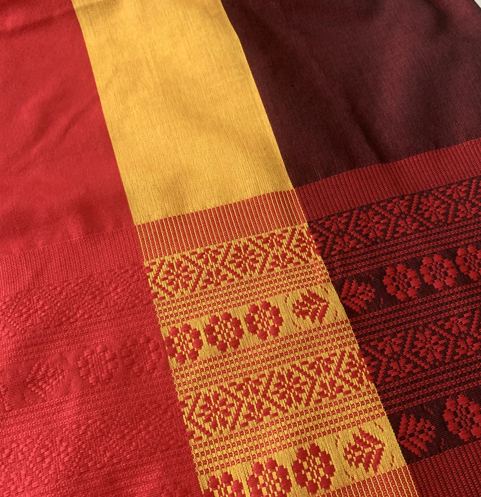
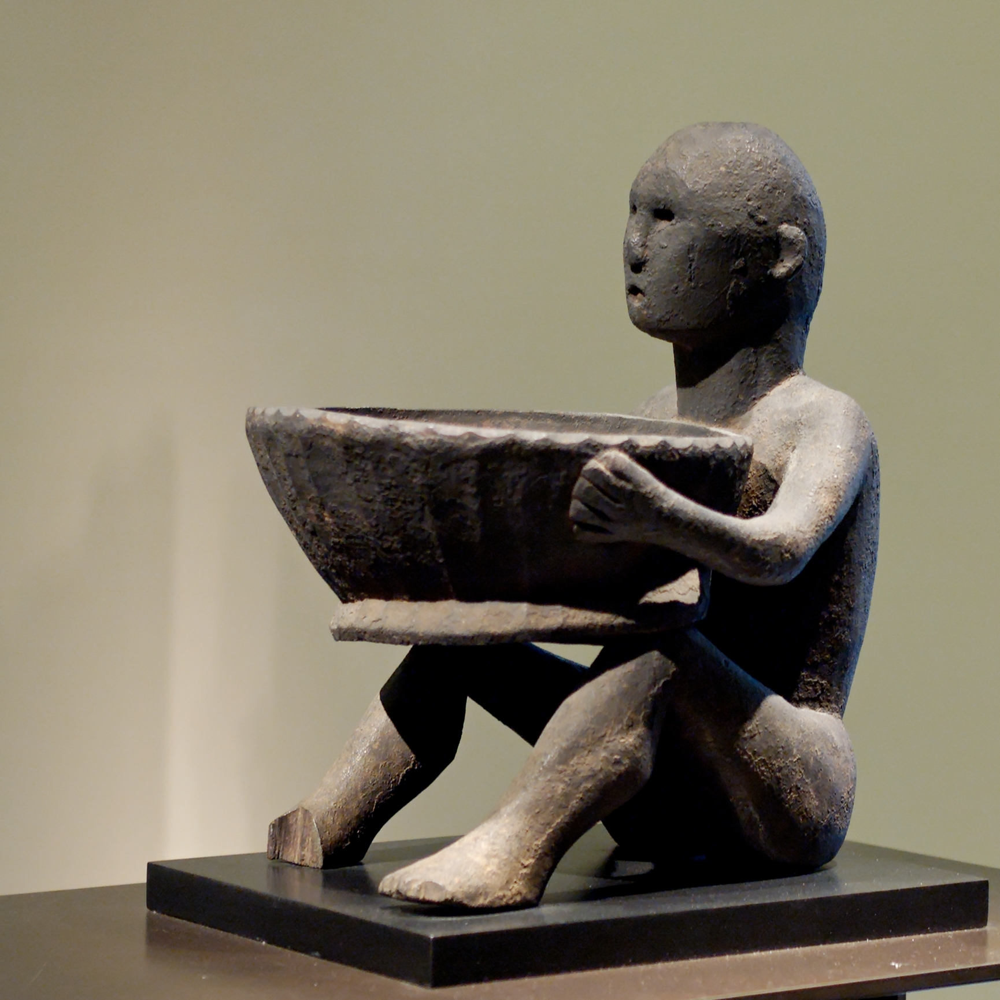
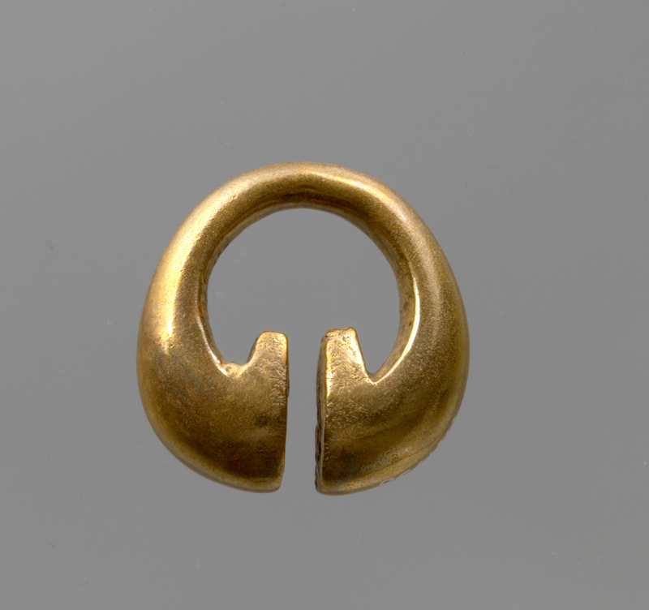
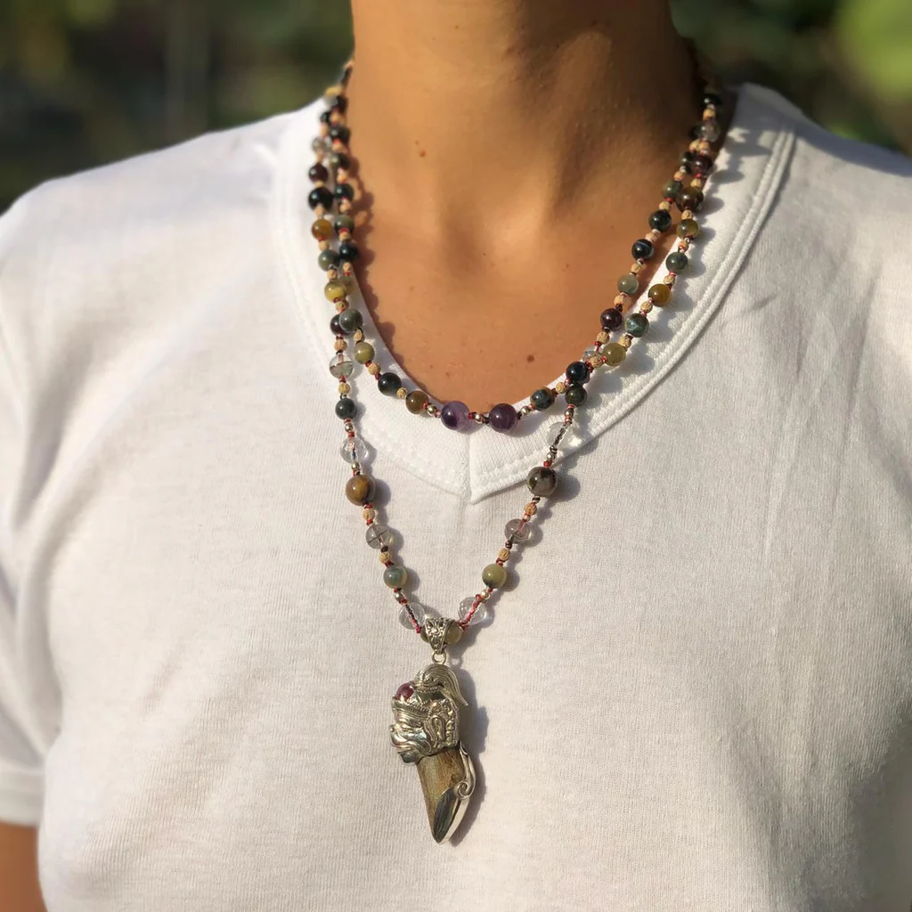
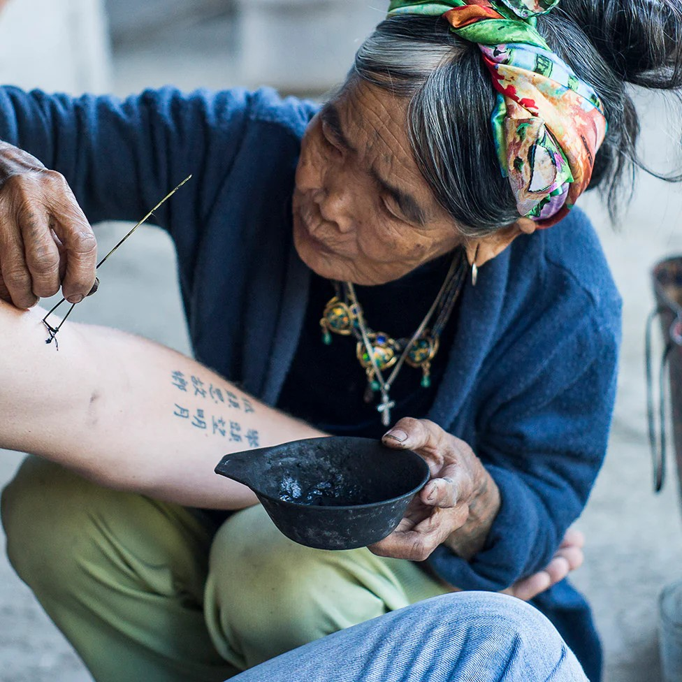
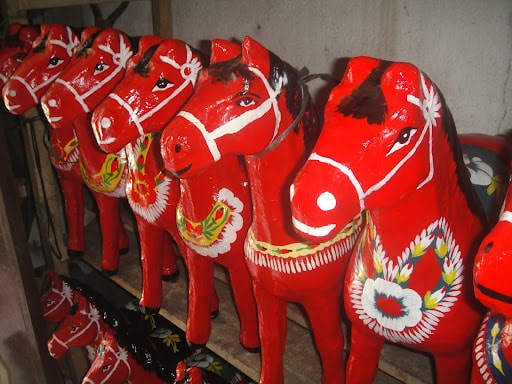

This section explores the "how" and "what" of Luzon's art—the physical characteristics that make these pieces unique.
Focus: Elements, Principles, and Identification

Inabel weaving of Ilocos is a traditional textile craft known for its durability and intricate patterns, made using handlooms by skilled Ilocano weavers. Burnay pottery, also from Ilocos, involves crafting large earthen jars used for storing water, grains, and fermented products like bagoong. Both crafts reflect the resourcefulness, artistry, and cultural heritage of the Ilocano people in the lowlands.

The Bul’ul wood carvings of the Cordillera highlands are sacred figures made by the Ifugao people to represent ancestral spirits. They are traditionally placed in rice granaries to protect crops and bring good harvests. Beyond their spiritual use, these carvings reflect the culture, beliefs, and craftsmanship of the Cordillera communities.

The Lingling-o is an omega-shaped fertility symbol used as a pendant or earring. Crafted from gold, silver, or bronze, it represents the ancient metallurgical skills of the Igorot people. It is not just decorative; it is a sacred amulet believed to provide protection and prosperity to the wearer.

The Gaddang people are famous for their heavy use of seed beads in their traditional attire. Their clothing is often adorned with intricate beadwork and small shells, reflecting high social status. This "wearable art" demonstrates a mastery of color coordination and repetitive geometric sequencing.

The tattoo art of Kalinga is a traditional practice known as batok, created using hand-tapped techniques and natural ink. These tattoos symbolize bravery, status, and identity within the community. They reflect the rich cultural heritage and ancestral traditions of the Kalinga people.

The taka (papier-mâché) of Paete is a traditional craft where artisans create colorful animal figures and masks using paper and paste molded over carved wooden forms. These lightweight and vibrant pieces are often used as toys, decorations, and festival items. Taka showcases the creativity and craftsmanship of Paete, a town known for its rich artistic heritage.
| Feature | Highlands (Cordillera/Batanes) | Lowlands (Ilocos/Pampanga) |
|---|---|---|
| Primary Purpose | Spiritual/Ancestral Protection | Daily Utility/Religious Devotion |
| Materials | Wood, Clay, Natural Fibers | Textiles, Paper, Metal, Glass |
| Key Example | Bul’ul, Vakul | Inabel, Giant Lanterns |